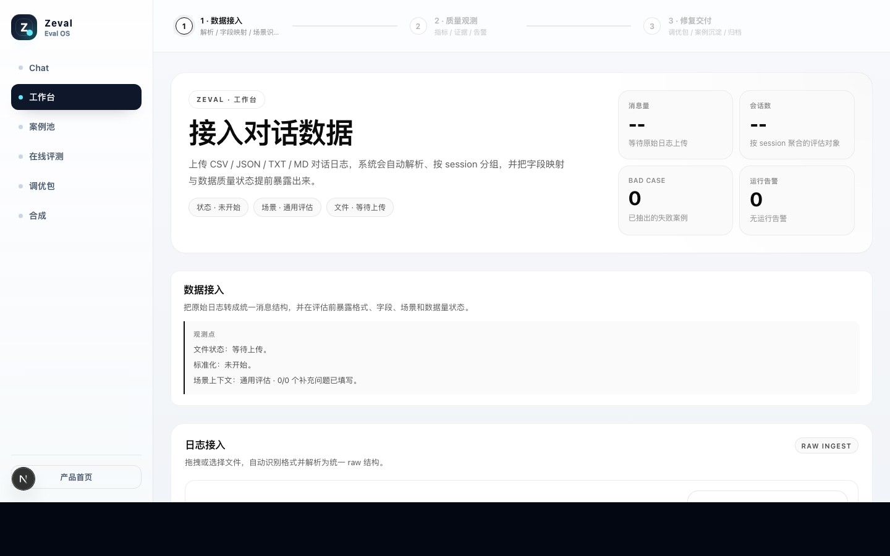
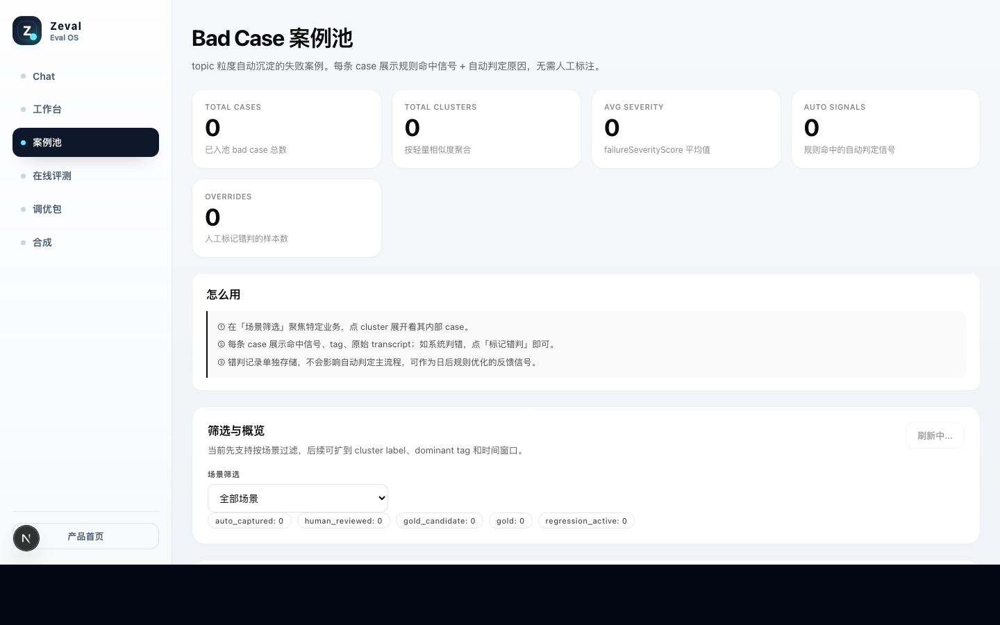
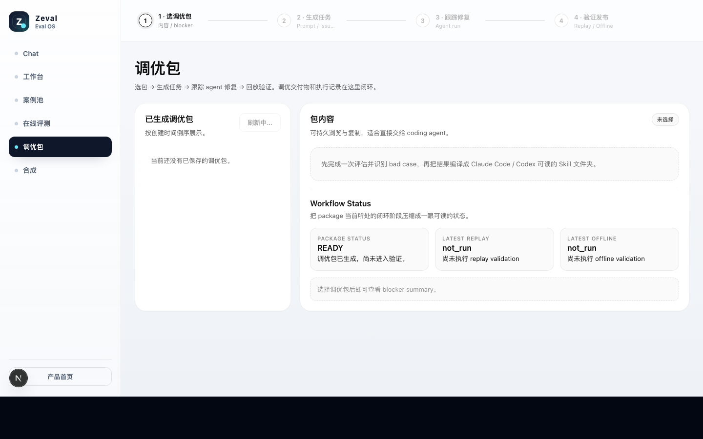
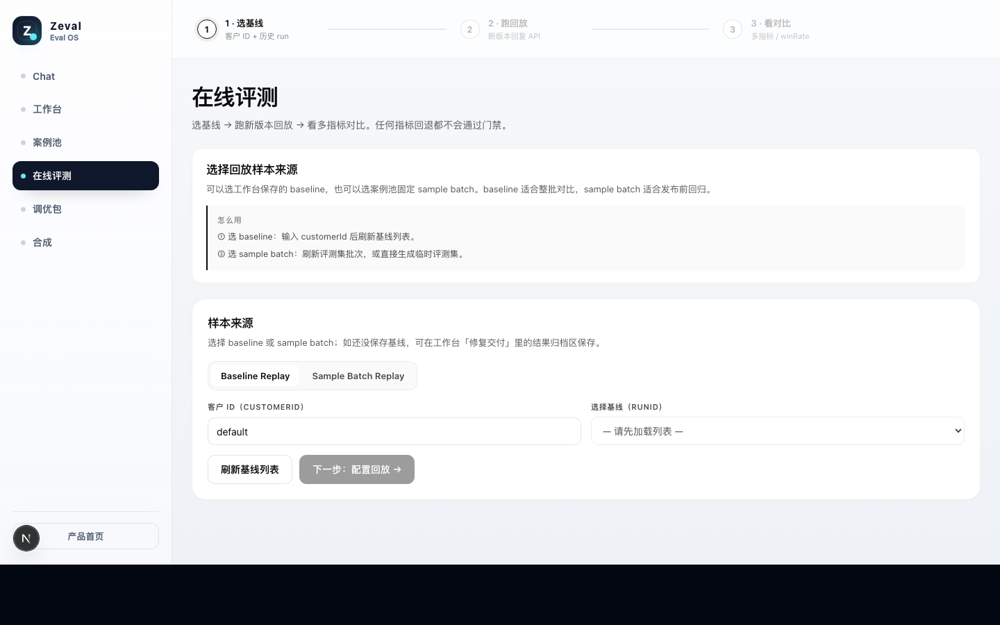

用户不再只看一次回答，而是在多轮对话里完成任务、表达情绪、不断试探边界。
Z
Zeval
AI Agent Quality Loop
把真实对话变成 AI Agent 持续进化的样本
Zeval 是一套面向 AI Agent 产品团队的体验进化闭环：从 bad case 里定位风险，从 golden case 里提炼高质量交互模式，再把它们变成证据、优化任务和回归验证。

Founder / Builder briefing
Context
AI Agent 正在进入真实业务，但质量方法还没有跟上。
失败不一定是报错。它可能是答非所问、说教、情绪没有恢复、用户逐渐停止追问。
Prompt、模型、工具链和策略一改，局部变好也可能让另一批场景回退。
Pain / Founder
现在很多团队还在靠感觉管理 AI 质量。
01
上线后每天看一堆 chatlog，但问题很难系统沉淀。
02
用户流失了，但团队说不清是第几轮、哪个行为导致的。
03
修 prompt 像调参，改完只能凭几条样例判断“好像变好了”。
04
失败没有变成资产，下一次发版还会踩类似的坑。
Pain / Engineering
传统 eval 给了分数，但没有把问题送到修复链路。
“这版平均分 82，但用户为什么还是掉线？”
- 缺少对话轮次级证据：哪一句触发了风险？
- 缺少主观维度结构：情绪、共情、追问、说教风险如何解释？
- 缺少可执行出口：应该改 prompt、policy、orchestration 还是代码？
- 缺少回归验证：修完是否真的赢过 baseline？
Example
真实失败经常不是一次答错，而是一段对话逐步失控。
我有点焦虑，最近一直睡不着。
睡眠问题一般需要规律作息，建议你保持运动。
我知道，但我现在就是停不下来地想事情。
你应该减少负面思考，建立积极心态。
算了。
情绪未恢复
说教风险
追问失败
用户提前退出
Our Thesis
AI Agent 产品需要的不是另一个 dashboard，而是质量闭环。
Upload
Evaluate
Evidence
Package
Replay
每一段真实对话，都应该成为下一版体验进化的样本。
Solution
Zeval 把 chatlog 编译成证据、修复任务和回归验证。
原始对话CSV / JSON / TXT / MD
解析标准化parser / normalizer / segmenter
质量评估客观指标 + LLM Judge
证据与建议score / reason / evidence
调优包issue brief / acceptance gate
回放验证baseline / replay / offline validation
Product / Workbench
第一步：让任何团队先把真实对话跑起来。
工作台负责上传、字段识别、标准化、流式评估、图表和建议输出，是 Zeval 当前最适合演示和客户验证的入口。
Product / Bad Case Pool
第二步：把坏体验沉淀成可复用 case pool。
失败会话会带着风险信号、证据片段和人工 override 入口沉淀下来，后续可以抽样、去重、复盘和回归验证。

Product / Remediation
第三步：把问题编译成 Agent 可执行调优包。
调优包包含 issue brief、badcases、remediation spec 和 acceptance gate，可以交给 Codex / Claude Code 修改 prompt、policy、orchestration 或代码。

Integration
当前支持 4 种接入方式，从演示到持续回归。
CSV / JSON / TXT / MD 对话日志直接进工作台。
/workbench标准 rawRows 输入，返回指标、图表、证据和建议。
POST /api/evaluate线上 Agent 运行轨迹进入系统，用于后续归档和回放。
POST /api/traces/ingest把评估结果接入工程流程和 Coding Agent 修复链路。
SDK / CLI → package → replay
Meaning
我们正在定义 Agent 时代的质量标准。
当 Agent 成为产品核心体验，每一段真实对话都值得沉淀。坏案例暴露风险，好案例提供可复用的交互模式，Zeval 把它们变成证据、优化任务和回归验证。
Zeval 的一句话
把 bad case 和 golden case，对齐到产品、工程和发版验证的同一条体验进化闭环里。
Contact
欢迎继续交流 Zeval。
如果你正在做 Agent 产品、手里有真实 chatlog，或者想聊 AI 产品质量闭环，可以扫码加入群聊或直接加我。
群聊
Zeval 评测种子群
适合继续讨论产品、评测方法、真实场景和早期试用。
二维码有效期至 2026-05-14 前
微信
Roger#
想单独交流 Agent 场景、接入方式或合作，可以直接加我。
公众号
Zeval 微信公众号
扫码关注公众号，后续查看产品进展和内容更新。